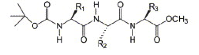

High throughput peptide self-assembly
The material offered in this page is LEGACY material. This means that it either pertains to older iterations of the Martini force field and/or that it is no longer actively supported. However, this does not mean that there aren’t cool things to be learned here! Have a look! If you are looking for the current iterations of the Martini force field lectures or hands-on tutorials, click here to go back!
Introduction
This tutorial will introduce you to combinatorial screening for peptide self-assembly using the Martini force field for proteins. The process is automated using a number of bash scripts, Gromacs tools and scripting capabilities within the visual molecular dynamics (VMD) program. After the simulations, visual inspection is done using VMD and analysis of the assembled structures is done using Gromacs tools. NOTE that the tutorial is written for versions 5.1 or 2016 of Gromacs and will show errors when used with earlier versions.
The tutorial discusses the self-assembly of short peptides as an example system. The material of the tutorial can be downloaded as a .tgz-file following this link. Unpack the directory tree (it expands to a directory called Peptide_assembly_GMX5-2016). The material is organized in a directory tree that is numbered by the subsections of this tutorial:
1_Background
2_Creating_coordinates
3_Coarse-graining
4_Running_simulations
5_AnalysisEach directory tree contains the files required for the tutorial. The results of a successful execution of the tutorial are also provided; this enables you to check your work and also to start anywhere and/or skip a number of steps in the procedure. For example, if you want to jump in at step 4, you can enter the directory 3_Done and continue there in the directory 4_Running_simulations. Be advised that you do so at your own peril…
The idea of this tutorial is to give you the commands to get through the different steps for a single peptide. However, in the files provided, you will also find several scripts that can help you perform the operations automatically, and set up a high throughput assay.
Commands to be entered on the command line of a terminal are preceded by the prompt >, e.g.:
./make_tripeptides.shIf a command requires multiple options, they should be typed on one line, even if they do not appear as such on the screen.
1. Background
Molecular self-assembly of oligopeptides into nanostructures holds much promise for a range of potential applications in biomedicine, food science, cosmetics and nanotechnology. This class of materials is highly versatile because of the combinatorial complexity achieved by combining 20 amino acids into peptide building blocks with a wide range of chemical functionality. The use of very short peptides, pioneered by Gazit[1] is especially attractive, enhancing opportunities for rational design combined with robustness, scalability and cost reduction.
Two main challenges are currently limiting the expansion of this field. Most examples of short peptides ([1] contain only hydrophobic amino acids. This is no surprise as hydrophobic interactions dominate self-assembly in water, but it also limits their aqueous solubility and restricts potential applications. Secondly, in spite of two decades of intensive research since the first examples of short self-assembling peptides,[1,2] most examples have been either discovered by serendipity or by mapping onto known sequence design rules from biological systems.[3,4] Recently, these issues were addressed using the Martini force field by generating design rules that indicate a peptide’s suitability for creating nanostructures under aqueous, pH neutral conditions.[4] Using Martini, the self-assembly of thousands of peptides can be tested in silico, before spending time and resources in the lab. Experimental validation has shown that Martini not only accurately represents the level of aggregation between peptides, but also informs on the supramolecular structure of the nano-sized assemblies.
In the field of peptide nanomaterials, it is common practice to ‘protect’ the N- and/or C-terminus of a peptide to introduce specific interactions and remove charge-charge repulsions. Examples include acetyl, Fmoc, naphthalene, pyrene and t-Boc functional groups at the N-terminus, or amide and ester groups at the C-terminus.
In this tutorial we will apply the combinatorial screening protocol from ref.[4] to protected tripeptides, specifically those discovered by Ray et al.[5] They found that placing tyrosine residues at both the N- and the C-terminus of a tripeptide drives the system to crystallize into hollow nanotubes with a 5 Å inner diameter. They showed this works for Boc-Tyr-X-Tyr-OMe peptides, where X = Val, Ile, and that mutating either of the tyrosine residues prevents nanotube formation.[6] This begs the question if peptides with other middle residues will maintain the nanotube conformation or will change their morphology. Additionally, the nanotubes were created by crystallization from a water/methanol mixture, while for realistic applications, the stability of the nanotubes in an aqueous environment should be tested.

2. Creating Peptide Coordinates
To simplify the tripeptide for this tutorial, we will treat Boc-Tyr-X-Tyr-OMe as a simple Tyr-X-Tyr peptide with uncharged termini, so that all parameters for coarse-graining are available within the Martini force field for proteins.[7] We want to test all 20 mutations of the middle amino acid (X). An easy way to create the 20 different peptide coordinates is using a molecular builder such as Avogadro in combination with the NAMD engine in VMD.
The files discussed here can be found in the directory 2_Creating_coordinates.
Go into the directory 2_Creating_coordinates to create 20 all-atom structures. Before you can proceed, you must edit the file make_peptides.sh to point to the executable of VMD on your system. Within the shell script, if necessary edit the line:
vmd='vmd'Save the file, make sure make_peptides.sh is executable and execute the shell script to generate the 20 required pdb files.
./make_peptides.shIf all is well, you have now generated 20 all-atom structures of tripeptides. You may check by opening one or more of the pdb-files in VMD.
If you are interested in the details of this procedure, read the text below. However, you may press on and get the simulation running first and then return to study the details. It’s up to you!
The idea of generating coordinates for each peptides is to use a template structure for a tripeptide and use this template to graft TYR-X-TYR unto the side chains. To this end, generic tripeptide coordinates are provided in the file XYZ.pdb. If you inspect this file, you will see coordinates for an atomistic model containing only the backbone atoms. There are several ways to generate such a file. Avogadro was mentioned. Also pymol contains an amino-acid builder. Using pymol, the required template file can be generated as follows:
Start up
pymol.Find the menu
Build, and from this menu selectResidue->Glycinethree times in a row. You should see the glycine tripeptide.Find the menu
File->Save Molecule, and save the coordinates just generated under the nameXYZ.pdb.Exit
pymol.Open the file
XYZ.pdbin an editor. Delete all the lines defining a H-atom. Change the residue identifiers GLY to XXX, YYY, and ZZZ for the first, second, and third residues, respectively. No other changes are necessary. Save the file.
The script make_peptides.sh loops over all 20 amino acids and edits the template file XYZ.pdb and the script create_tripeptides.tcl to reflect the residues to be grafted unto the coordinate template to generate an instruction set for VMD. For each tripeptide, the script make_peptides.sh then calls VMD with this instruction set to generate the coordinates of the required tripeptide. The coordinates are based on the CHARMM all-atom force field, and the building blocks containing information to construct positions from back-bone coordinates only are contained in the file top_all36_prot.rtf. Note that the script make_peptides.sh can easily be modified to generate coordinates for all possible tripeptides.
3. Create a coarse-grained system using martinize.py and Gromacs tools
In this step, one or more of the atomistic structures generated in step 2, are used to generate a Martini coarse-grained topology file, a coarse-grained structure of a single tripeptide, and a simulation box containing 100 peptides and solvent randomly placed in the box. The files discussed here can be found in the directory 3_Coarse-graining.
Coarse-grained Martini topologies of peptides and proteins can be built automatically using the martinize.py script. An elaborate tutorial is available as part of the Protein tutorial on the Martini website.
Execute the martinize.py script on a tripeptide of your choice to create coarse-grained coordinates using the Martini 2.2 force field. Remember to use neutral termini! In the papers discussing the YXY peptide it is mentioned that the backbone dihedral angles in the crystal structure fall in the β-sheet Ramachandran region.[5,6] We therefore use the extended β secondary structure for all three amino acids (flag ‘-ss EEE’). In the commands below, replace XXX by the three-letter amino acid code of your choice:
./martinize.py -f ../2_Creating_coordinates/TYR-XXX-TYR_aa.pdb -name TYR-XXX-TYR -o TYR-XXX-TYR.top -x TYR-XXX-TYR.pdb -ff martini22 -nt -ss EEEYou need to edit the output file TYR-XXX-TYR.top. The martinize.py script adds an #include statement to the generic Martini force field file. Since we are using version 2.2, make sure the statement reads:
#include "martini_v2.2.itp"Inspect the output file TYR-XXX-TYR.itp to see what bead types were chosen for different parts of the peptide. Does it make sense?
When you have the coarse-grained coordinates of a single peptide and created its topology, create a small box of water containing enough peptides to create a self-assembled structure. For this tutorial, a small box of 8 x 8 x 8 nm containing 100 peptides can be used. The Gromacs tools insert-molecules and solvate enable you to first define the box and fill it with 100 peptides and next, fill the box containing the 100 peptides with Martini water. For more details, see the introductory lipid self-assembly tutorial.
gmx insert-molecules -box 8 8 8 -nmol 100 -ci TYR-XXX-TYR.pdb -radius 0.4 -o TYR-XXX-TYR_box.gro
gmx solvate -cp TYR-XXX-TYR_box.gro -cs water-80A_eq.gro -radius 0.21 -o TYR-XXX-TYR_water.groN.B.1: the -radius flags keep the peptides somewhat apart initially (setting 0.4) and create a density that is roughly right for Martini water (setting 0.21). Note that the insert-molecules tool occasionally adds too many water beads if you solvate with water boxes of significantly different sizes than the peptide box. If you plan to use a different sized simulation box, it is recommended to first create an equilibrated water box of that size. Here, the file water-80A_eq.gro contains Martini water in a container of the correct size.
N.B.2: You will have to edit the TYR-XXX-TYR.top file again to include the right number of peptides (100) and the right number of water beads (name W, check the output of the second insert-molecules command for the amount).
N.B.3: Note that the concentration of peptides here is ~0.32 M. This is way higher than experimentally, but otherwise we might be waiting a long time for the peptides to assemble into a large enough aggregate! On the other hand, the nanostructures found were created by evaporation of solvent, and the local concentration of peptides close to the nanostructure may be a lot higher than the average concentration in the bulk anyway.
We have now generated a structure containing 100 peptides solvated in Martini water. Some peptides may be charged, however, and it is advisable to add at least counter ions. The Gromacs tool genion can replace water beads by ion beads based on the electrostatic potential at the water beads; it will replace the water bead by an ion bead where this is energetically most favorable. The new structure is written out and the topology file is adapted to reflect the change in number of water and ions. The tool genion requires a .tpr file. Generate this first and then replace water beads by ions:
gmx grompp -f tripep_water_min.mdp -p TYR-XXX-TYR.top -c TYR-XXX-TYR_water.gro -o TYR-XXX-TYR_genion.tpr
gmx genion -s TYR-XXX-TYR_genion.tpr -pname NA+ -nname CL- -neutral -o TYR-XXX-TYR_water.groN.B. 1 The names of the ions are added explicitly on the command line of genion to make sure they are compatible with the names of the ion beads in Martini (defined in the file martini_v2.0_ions.itp).
N.B. 2 The starting structure is given the same name as the one containing only water. This is done on purpose with automation in mind. If the system is neutral, no ions are added and no output is produced. If the name of the structure file would be different (e.g. TYR-XXX-TYR_wion.gro), scripts would have to check whether this file exists or whether the system was neutral.
Before leaving this section, if your peptide is not neutral and water beads were replaced by ion beads, edit the topology file for your peptide to reflect the fact that you have ion beads in the system by:
- adding an include statement (use a line below the main Martini include file) for the file defining Martini ion beads:
#include "martini_v2.0_ions.itp"- in the
[molecules]section, change the number of water beads and add a line specifying the ion beads (the ions are all collected at the end of the structure file).
You may automatically perform this procedure for all 20 peptides by executing the script setup_tripeptides.sh.
4. Running self-assembly simulations
Now the starting structure(s) of 100 peptides in water in the Martini model are generated. The next step is to run the simulation(s) in which the peptides may or may not be seen to self assemble. The protocol is similar to that in lipid self assembly, see the introductory lipid self-assembly tutorial.
The files discussed here can be found in the directory 4_Running_simulations.
Standard minimization and equilibration MD inputs are provided. Inspect the files tripep_water_min.mdp and tripep_water_eq.mdp and rationalise the mdp options used. If you have time, perform the simulations for all the peptides, otherwise choose one peptide to take through the steps of this tutorial and use the output provided for the other peptides. 500,000 steps of 25 fs take less than 5 minutes to complete on an 8-processor machine. In the commands below, replace XXX by the three-letter amino acid code of your choice:
gmx grompp -f tripep_water_min.mdp -p ../3_Coarse-graining/TYR-XXX-TYR.top -c ../3_Coarse-graining/TYR-XXX-TYR_water.gro -o TYR-XXX-TYR_min.tpr -maxwarn 1
gmx mdrun -deffnm TYR-XXX-TYR_min -v
gmx grompp -f tripep_water_eq.mdp -p ../3_Coarse-graining/TYR-XXX-TYR.top -c TYR-XXX-TYR_min.gro -o TYR-XXX-TYR_eq.tpr -maxwarn 2
gmx mdrun -deffnm TYR-XXX-TYR_eq -vN.B. We ignore some warnings in the above: in preparing for the minimization, there is a difference in atom names (CL- vs. CL). This is safe to ignore. In preparing the equilibration, we are warned about barostat and thermostat inaccuracies with the timestep we use. These are things to keep in mind if you have a good reason to care about correct thermodynamics. For our purpose, however, we can safely continue.
All tripeptides can sequentially be treated in this manner automatically by running the script run_sims.sh. This may take prohibitively long, and if you want to test the automated analysis in the next step, it is best done by continuing in the directory 4_Done that contains all simulations.
5. Analysing the results
The files discussed here can be found in the directory 5_Analysis. In the commands below, replace XXX by the three-letter amino acid code of your choice.
Inspect the results of the simulation using VMD.
vmd ../4_Running_simulations/TYR-XXX-TYR_min.gro ../4_Running_simulations/TYR-XXX-TYR_eq.xtcSince we are looking at a coarse-grained model, VMD does not show a bond structure on the peptides. You must change the representation of the particles to get a better view. The simplest action is to open the Graphics->Graphical Representations menu, in the Selected Atoms window type not name W, and in the Drawing Method window select VDW. This will show the peptides in a rough-and-ready form. It is not the best representation, however, and you may need a better view. Please consult the tutorial on visualization Martini using VMD.
Do you find any nanotubes? Can you explain why (not)? (Hint: protecting groups, crystallization vs. single fibers etc.)
You may or may not be lucky and have a single aggregate that is not split across the periodic boundary. The clusters of peptides are often spread across the periodic boundaries of the system for most systems. You can centre the final snapshot on a large cluster using:
echo 1 1 1 | gmx trjconv -f ../4_Running_simulations/TYR-XXX-TYR_eq.gro -s ../4_Running_simulations/TYR-XXX-TYR_eq.tpr -pbc cluster -center -o TYR-XXX-TYR_clustered.groNow, open the clustered final snapshot in VMD and adapt the representation (note, is no solvent in the file anymore).
As you will notice when you compare different tripeptides, the tyrosine residues strongly drive aggregation in water, irrespective of the middle amino acid. However, you should be able to distinguish slightly different levels of aggregation for different peptides. One way to quantify the level of aggregation is calculating the solvent-accessible surface area (SASA) after assembly and compare to the initial SASA after energy minimization of the box.[4,8] Take the ratio SASAinitial / SASAfinal as a measure for the aggregation propensity using the Gromacs command gmx sasa.
echo 1 1 | gmx sasa -f ../4_Running_simulations/TYR-XXX-TYR_min.gro -s ../4_Running_simulations/TYR-XXX-TYR_min.tpr -o TYR-XXX-TYR_sasa_init.xvg -surface 'group "Protein"' -probe 0.4
echo 1 1 | gmx sasa -f TYR-XXX-TYR_clustered.gro -s ../4_Running_simulations/TYR-XXX-TYR_eq.tpr -o TYR-XXX-TYR_sasa_end.xvg -surface 'group "Protein"' -probe 0.4N.B. If you have time or are interested: you can also calculate the SASA for an assembly using the VMD tool measure, where a rolling sphere (e.g. of radius 1.4 nm) is used to determine the SASA of a selection of atoms. Does it match the result from gmx sasa? Start up VMD (in the directory 4_Running_simulations) and in the Tk console of VMD, type:
mol new TYR-XXX-TYR_min.gro
set sasa_ini [measure sasa 1.4 [atomselect top “not resname W and not resname ION”]]
mol new ../5_Analysis/TYR-XXX-TYR_clustered.gro
set sasa_end [measure sasa 1.4 [atomselect top “not resname W and not resname ION”]]
set aggregation_propensity [expr $sasa_ini / $sasa_end]
echo $aggregation_propensityThe change in solvent accessible surface is a measure of the level of aggregation. However, the level of aggregation is not a direct measure for the suitability of a peptide to create a well-ordered nanostructure under aqueous conditions, as it can also mean the peptide is not actually soluble, or simply forms disordered aggregates. To get more insight into the structure and organization within the assembly, you can for example try to calculate molecular order through radial distribution functions. Another example is looking for 1-dimensionality as is typically observed in self-assembled peptides that form fibres or tubes. A basic indication of the shape can be automated using Gromacs’s built-in tools as outlined below. For more advanced ways to calculate a nanostructure’s shape, see ref.[9].
We will calculate the moments of inertia (MOIs) along the principal axes of the system of the largest cluster of peptides only. Note that it requires the creating of some extra .tpr files to persuade Gromacs to work on the right molecules in the cluster. First, we make an index file containing the peptides only:
gmx make_ndx -f ../4_Running_simulations/TYR-XXX-TYR_eq.gro -o TYR-XXX-TYR_noW.ndx < options.txtNext, the Gromacs tool gmx clustsize is used to extract the largest cluster from the final snapshot, based on a distance criterion of 0.5 nm. The indices (bead numbers) of the beads involved in the largest cluster are written to the index file TYR-XXX-TYR_maxclust.ndx.
gmx clustsize -f ../4_Running_simulations/TYR-XXX-TYR_eq.xtc -s ../4_Running_simulations/TYR-XXX-TYR_eq.tpr -mcn TYR-XXX-TYR_maxclust.ndx -n TYR-XXX-TYR_noW.ndx -cut 0.5The next step is to create a new .tpr file for the selected atoms and to use this .tpr file to center the cluster and to align it according to its principal axes for visualization; the snapshot TYR-XXX-TYR_princ.gro generated using the Gromacs command gmx editconf contains the aligned cluster. Comparing these snapshots from different tripeptides should give some insight into the differences in self-assembled structures.
gmx convert-tpr -s ../4_Running_simulations/TYR-XXX-TYR_eq.tpr -n TYR-XXX-TYR_noW.ndx -nsteps -1 -o TYR-XXX-TYR_noW.tpr
gmx trjconv -f TYR-XXX-TYR_clustered.gro -s TYR-XXX-TYR_noW.tpr -n TYR-XXX-TYR_noW.ndx -o TYR-XXX-TYR_maxclust.gro
gmx convert-tpr -s TYR-XXX-TYR_noW.tpr -n TYR-XXX-TYR_maxclust.ndx -nsteps -1 -o TYR-XXX-TYR_maxclust.tpr
echo 1 | gmx editconf -f TYR-XXX-TYR_maxclust.gro -princ -c -o TYR-XXX-TYR_princ.groFinally, the Gromacs tool gmx gyrate is used to calculate the MOIs.
echo 1 | gmx gyrate -f TYR-XXX-TYR_princ.gro -s TYR-XXX-TYR_maxclust.tpr -moi -o TYR-XXX-TYR_gyrate.xvgThe moments of inertia of the cluster in the final snapshot is written to the .xvg file, which is human readable. Calculate the aspect ratios (Iz / Ix). Aggregates with Ix << Iy ≈ Iz are mainly 1D.
If you have done all peptide self assembly simulations, or want to look at the provided final structures of all 20 peptides, start up VMD and type source load_tripeptides.tcl into the VMD Tk console to load all peptides at once into VMD. To view a particular one, click on the red “D” in the main menu; this will turn black and the structure is shown in the viewer window. To hide, click on the black “D” in the main menu.
You can perform the analysis for all peptides in automated fashion using the analysis.sh script. Summaries of the analysis are written to the files sasa_trip.txt and inertia_trip.txt. Which peptides are the most fibrous?
Tools and scripts used in this tutorial
gromacshttp://www.gromacs.org/martinize.py[find here]
References
[1] Reches, M., and Gazit, E. Casting metal nanowires within discrete self-assembled peptide nanotubes. Science 300, 625-627 (2003).
[2] Ghadiri, M. R., Granja, J. R., Milligan, R. A., McRee, D. E., and Khazanovich, N. Self-assembling organic nanotubes based on a cyclic peptide architecture. Nature 366, 324-327 (1993).
[3] Zhang, S., Holmes, T., Lockshin, C. & Rich, A. Spontaneous assembly of a self-complementary oligopeptide to form a stable macroscopic membrane. Proc. Natl. Acad. Sci. U. S. A. 90, 3334 -3338 (1993).
[4] Frederix, P. W. J. M. et al. Exploring the sequence space for (tri-)peptide self-assembly to design and discover new hydrogels. Nat. Chem. 7, 30-37 (2015).
[5] Ray, S., Haldar, D., Drew, M. G. B. & Banerjee, A. A New Motif in the Formation of Peptide Nanotubes: The Crystallographic Signature. Org. Lett. 6, 4463-4465 (2004).
[6] Ray, S., Drew, M. G. B., Das, A. K. & Banerjee, A. The role of terminal tyrosine residues in the formation of tripeptide nanotubes: a crystallographic insight. Tetrahedron 62, 7274-7283 (2006).
[7] Monticelli, L. et al. The MARTINI Coarse-Grained Force Field: Extension to Proteins. J. Chem. Theory Comput. 4, 819-834 (2008).
[8] Frederix, P. W. J. M., Ulijn, R. V., Hunt, N. T. & Tuttle, T. Virtual Screening for Dipeptide Aggregation: Toward Predictive Tools for Peptide Self-Assembly. J. Phys. Chem. Lett. 2, 2380-2384 (2011).
[9] Fuhrmans, M. & Marrink, S.-J. A tool for the morphological analysis of mixtures of lipids and water in computer simulations. J. Mol. Model. 17, 1755-1766 (2011).